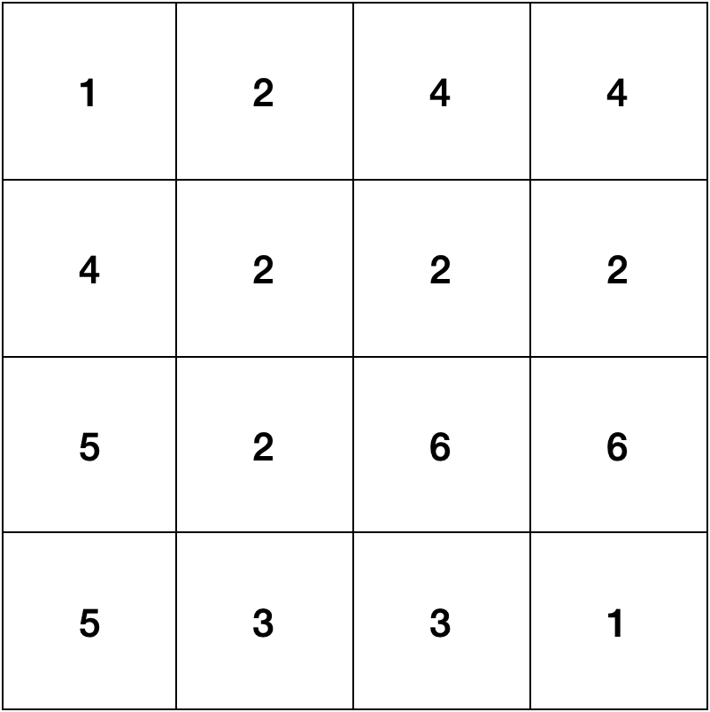
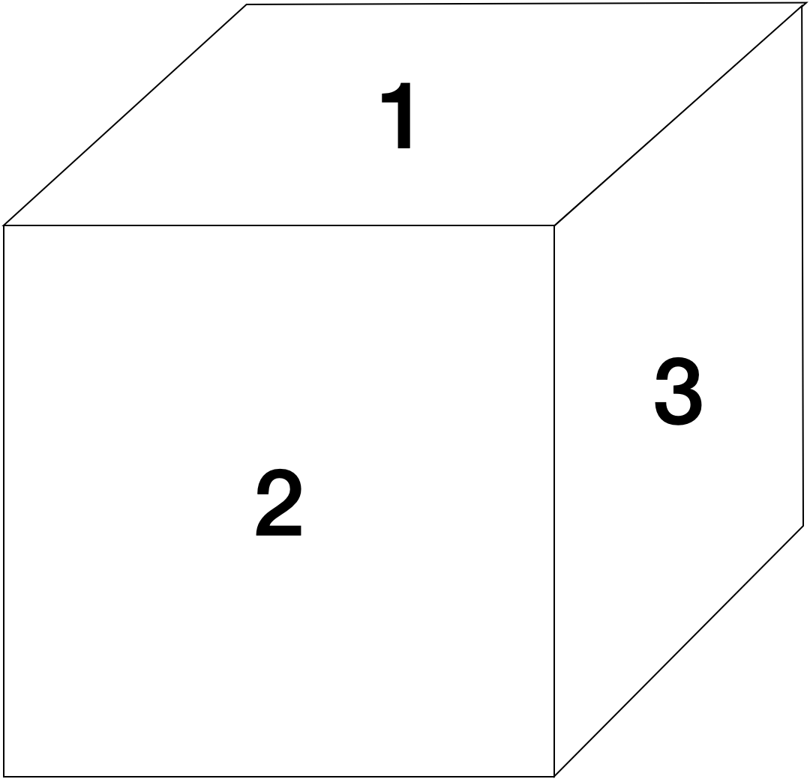
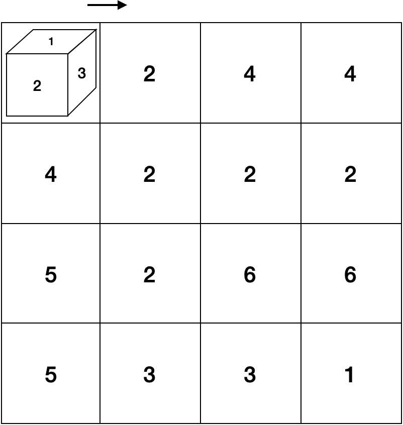
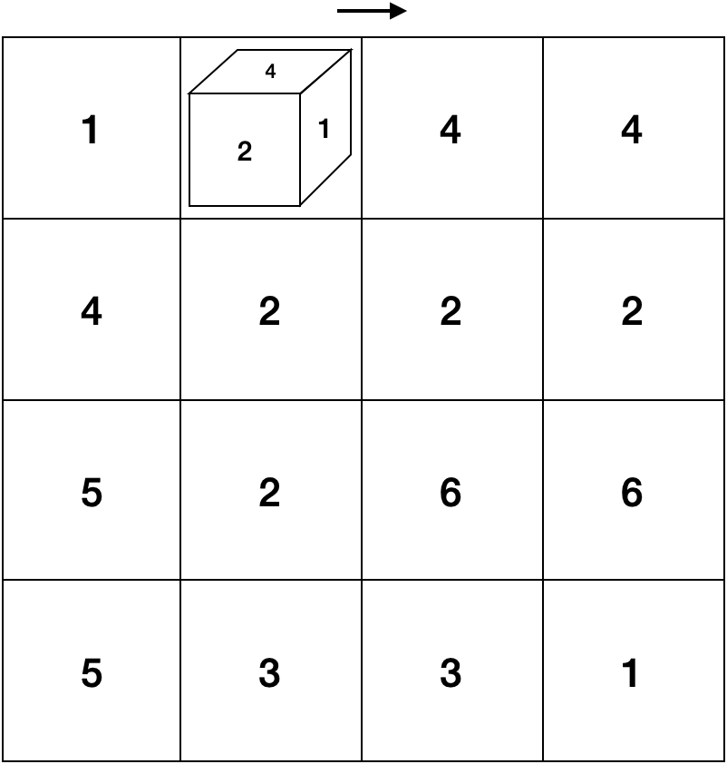
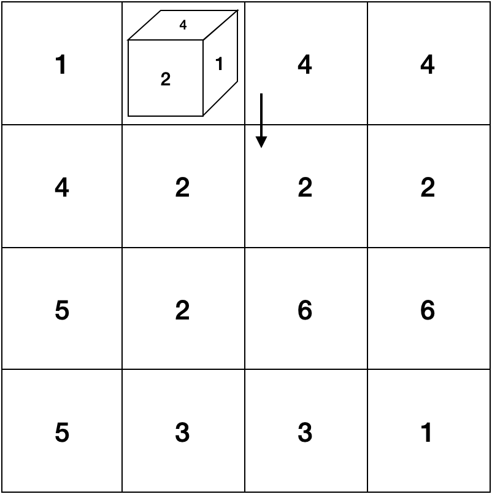
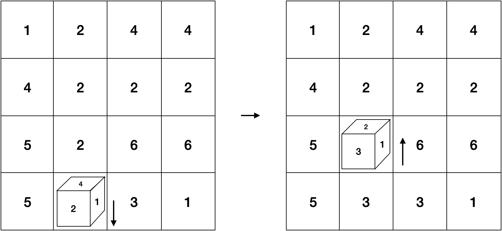

1에서 6 사이의 임의의 숫자가 그려진 n * n 격자판에 한 면이 1 * 1 크기인 정육면체를 놓여져 있습니다. 해당 격자판에서 정육면체를 굴리려합니다.
다음과 같이 4 * 4 크기의 격자판이 주어졌다고 가정해보겠습니다.
처음 정육면체의 각 면에는 1부터 6까지의 숫자가 다음과 같이 쓰여져 있고 m번에 걸쳐 주사위를 계속 1칸씩 굴리게 됩니다. 이때, 마주보는 면에 적혀있는 숫자의 합은 정확히 7입니다.
주사위는 항상 초기에 격자판의 1행 1열에 놓여져 있고, 처음에는 항상 오른쪽으로 움직입니다.
주사위를 움직일때마다, 격자판 위 주사위가 놓여있는 칸에 적혀있는 숫자와 상하좌우로 인접하며 같은 숫자가 적혀있는 모든 칸의 합만큼 점수를 얻게 됩니다.
예를 들어 현재 주사위가 (1행, 2열)에 놓여져 있고, 격자 판이 다음과 같이 4 * 4 크기의 판이었다면, 1행 2열에 적혀있는 숫자는 2이므로, 상하좌우로 인접하게 숫자2가 적혀있는 총 개수는 5개이므로 총 10점을 얻게 됩니다.

주사위를 구르면서 이동을 하기 때문에 이렇게 한 칸을 이동한 뒤에는 다음과 같이 바라보는 면이 바뀌게 될 것입니다.
이때, 주사위의 아랫면이 보드의 해당 칸에 있는 숫자보다 크면 현재 진행방향에서 90' 시계방향으로 회전하여 다시 이동을 진행하게 되고, 주사위의 아랫면의 숫자다 더 작다면 현재 진행방향에서 90' 반시계방향으로 회전하게 되며, 동일하다면 현재 방향으로 계속 진행하게 됩니다.
현재 상황에서는 주사위 아랫면에 적혀있는 숫자는 3인데, 닿아있는 격자판에 적혀있는 숫자는 2이므로 다음과 같이 진행방향이 시계방향으로 90' 틀어지게 됩니다.
이제 또 움직임을 반복하고, 점수를 얻게 되는 과정을 m번 진행하게 되는 것입니다.
하지만 만약 진행 도중 다음과 같이 격자판을 벗어나게 된다면, 반사되어 방향이 반대로 바뀌게 된 뒤 한 칸 움직이게 됩니다.
n * n 크기의 격자판의 상태가 주어졌을 때, m번 진행하며 얻게되는 점수의 총 합을 구하는 프로그램을 작성해보세요.
입력 형식
첫째줄에 격자 크기 n, 그리고 굴리는 횟수 m이 공백을 사이에 두고 주어집니다.
둘째줄부터 n+1번째 줄까지 격자판에 적혀있는 수 n개가 한 줄에 하나씩 공백을 사이에 두고 주어집니다.
- 2 ≤ n ≤ 20
- 1 ≤ m ≤ 1000
- 1 ≤ 말판에 쓰여진 수 ≤ 6
출력 형식
주사위를 m번 굴렸을 때 까지 얻게되는 총 점수의 합을 출력합니다.
입출력 예제
예제 1
입력 :
4 3
1 2 4 4
4 2 2 2
5 2 6 6
5 3 3 1
출력 :
30
예제 2
입력 :
4 4
1 2 4 4
4 2 2 2
5 2 6 6
5 3 3 1
출력 :
40
제한
시간제한 : 1000ms
메모리 제한 : 80MB